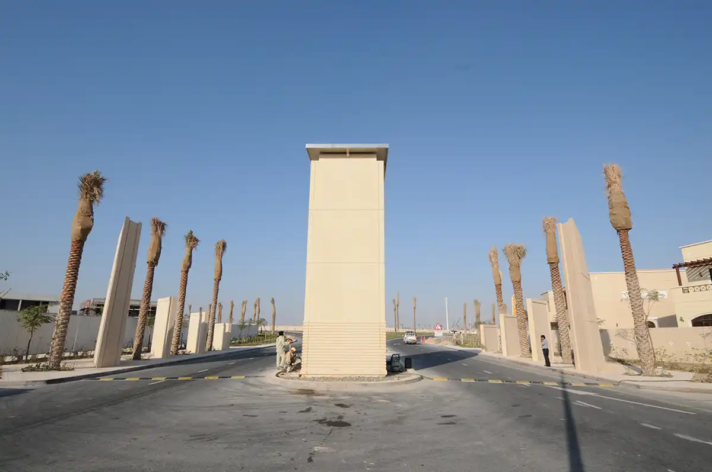
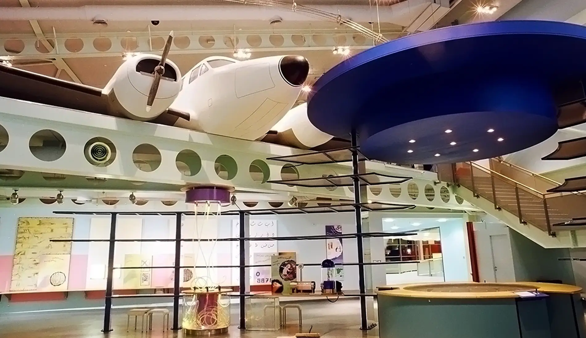
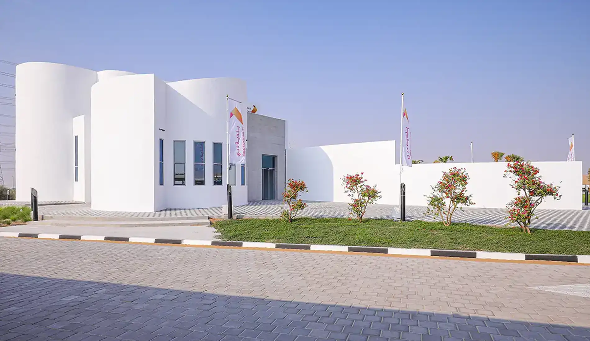

Sectors
Innovation has no limits.
At GS, our expertise spans a wide spectrum of the construction industry, underscoring our commitment to excellence, innovation, and sustainable development in every project. We integrate quality engineering and advanced technology, ensuring that each endeavor not only meets but exceeds industry standards. This holistic approach allows us to deliver exceptional results while fostering a sustainable future.

Infrastructure
GS has developed a portfolio of infrastructure and urban public projects, merging engineering expertise with community-centered construction practices. Collaborating closely with our clients to create enduring infrastructure, our approach is characterized by meticulous planning and efficient logistics management.

Residential
We excel in planning and executing residential projects, including high-rise buildings, mid-rise complexes, and villas. With our expertise in project management and construction, we ensure seamless completion, adhering to strict timelines, budgets, and quality standards. Through meticulous planning and rigorous quality control, we deliver properties that meet top industry benchmarks and satisfy our clients' needs. By consistently exceeding deadlines, we enhance developers' reputations with timely property handovers, contributing to their success and fostering long-term partnerships.

Commercial
GS has made significant contributions to the commercial urban landscape and construction sector in Islamabad and Pakistan, which are vital components of the rapidly expanding economy. As a premier entity in this field, GS plays a central role in shaping the commercial infrastructure landscape of the region.

Industrial
GS has vast experience in constructing industrial buildings, including specialized facilities for the aviation sector. We deliver high-performance structures that meet the stringent requirements of airlines and other industrial enterprises, using advanced construction techniques to create efficient and durable spaces.

Hospitality
GS boasts extensive experience in hospitality projects, having successfully delivered numerous hotels with iconic interior fit outs. Our portfolio showcases a diverse range of projects. With meticulous attention to detail and a commitment to quality craftsmanship, GS ensures that every project reflects the unique identity and brand ethos of our clients. We collaborate closely with our partners to bring their vision to life, creating inviting and memorable spaces that exceed expectations.

Recreational
GS expands its portfolio with a diverse array of recreational projects, showcasing its expertise in delivering sports complexes, entertainment venues, and community spaces. With a focus on innovation and quality, GS ensures each project exceeds expectations, contributing to vibrant and iconic recreational landscapes.

Retail
GS demonstrates expertise in constructing retail projects, delivering malls and community centers that enhance local environments. Through meticulous project management and efficient construction practices, GS creates dynamic retail destinations that foster economic growth and enrich residents' quality of life.

Education
In the rapidly evolving landscape of Pakistan, the construction of educational facilities, including schools and universities, plays a crucial role in the nation's development. GS leads this sector, pioneering the design and construction of educational institutions that serve as both centers of learning and architectural landmarks. Delivering these structures involves overcoming challenges related to state-of-the-art systems and timely completion, areas where GS has excelled, providing some of the most important institutes in the region.

Heritage
At GS, we specialize in restoration, excelling in the meticulous crafting of intricate details and the refurbishment of heritage projects. With our wealth of expertise and unwavering commitment to preserving historical significance, we breathe new life into iconic structures, ensuring they stand the test of time while retaining their unique charm and character. From delicate preservation efforts to comprehensive renovations, our team approaches each project with a blend of reverence for the past and dedication to excellence, resulting in stunning transformations that honor heritage and inspire generations to come.

Healthcare
In the rapidly evolving landscape of Pakistan, the construction of healthcare facilities plays a crucial role in the nation's development. GS leads this sector, pioneering the design and construction of healthcare institutions that serve as both centers of care and architectural landmarks. Delivering these structures involves overcoming challenges related to state-of-the-art systems and timely completion, areas where GS has excelled, providing some of the most important institutes in the region.

3D Printing
3D printing, also known as additive manufacturing, has revolutionized the construction sector by enabling companies to fabricate buildings and components with unparalleled speed, precision, and cost efficiency. GS actively follows global innovation in 3D-printed construction and modern building methods. Through continuous research and partnerships, GS contributes to advancing innovative construction technology for Pakistan's market.
Ready to Build Smarter?
Tell us about your project — a senior engineer will reply within one working day, and your first consultation is always free.
Book Free Consultation